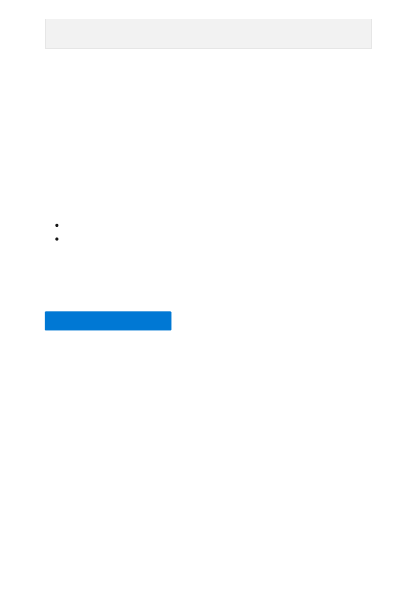

Using this approach, you can use embeddings as a search mechanism across documents
in a knowledge base. The user can then take the top search result and use it for their
downstream task, which prompted their initial query.
If you created an OpenAI resource solely for completing this tutorial and want to clean
up and remove an OpenAI resource, you'll need to delete your deployed models, and
then delete the resource or associated resource group if it's dedicated to your test
resource. Deleting the resource group also deletes any other resources associated with
it.
Learn more about Azure OpenAI's models:
sponsored by, or includes the participation of a team that is part of, a tax
exempt organization."
Clean up resources
Next steps